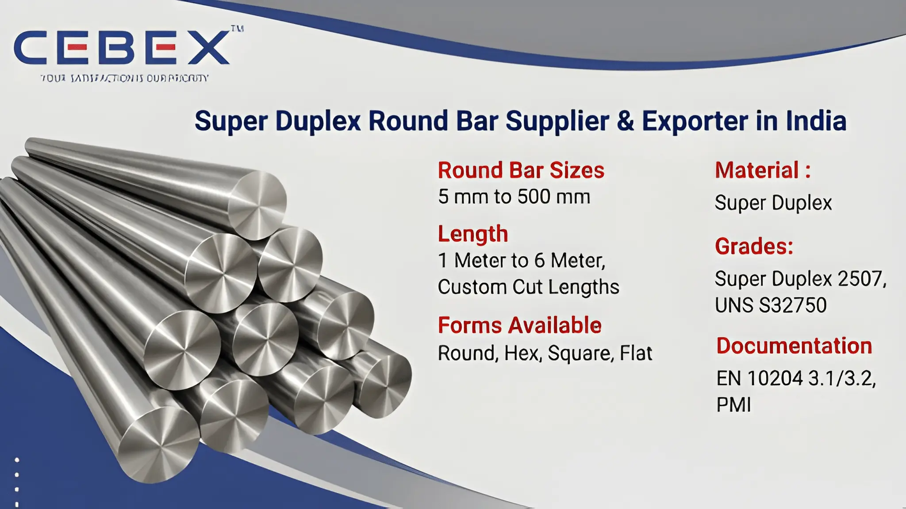

In industries where extreme corrosion resistance, exceptional mechanical strength, and long-term operational reliability are critical, Super Duplex Round Bars are widely preferred for highly demanding applications. As a leading Super Duplex Round Bar Supplier & Exporter in India, CEBEX STEEL INDIA supplies premium-quality Super Duplex steel round bars manufactured according to international standards for offshore, marine, petrochemical, oil & gas, desalination, and heavy engineering industries.
Our Super Duplex round bars are engineered to deliver outstanding resistance against chloride stress corrosion cracking, pitting corrosion, crevice corrosion, seawater corrosion, and high-pressure industrial environments. These round bars combine the advantages of ferritic and austenitic stainless steels, offering significantly higher strength and corrosion resistance than conventional stainless steel grades.
At CEBEX STEEL INDIA, we utilize advanced processing technologies and strict quality control systems to supply Super Duplex round bars with precise dimensional accuracy, superior surface finish, and reliable metallurgical properties. Our products are trusted by EPC contractors, procurement companies, fabricators, and industrial buyers across India, Africa, the Middle East, Europe, and Southeast Asia.

Selecting the right Super Duplex Round Bar supplier is essential for ensuring the safety, efficiency, and durability of industrial equipment and structural applications. CEBEX STEEL INDIA is recognized as a preferred Super Duplex Round Bar Supplier & Exporter in India because of our technical expertise, stringent quality standards, and reliable global supply capabilities.
We maintain complete traceability from raw material procurement to final dispatch and supply all materials with EN 10204 3.1/3.2 Mill Test Certificates, inspection reports, and compliance documentation. Our quality assurance team conducts comprehensive testing including PMI testing, ultrasonic testing, hardness testing, chemical analysis, and dimensional inspections to ensure every round bar meets project specifications and international material standards.
Our strong export infrastructure and logistics support allow us to deliver Super Duplex round bars efficiently to major industrial projects worldwide with proper export packing and documentation.
Our Super Duplex Round Bars are manufactured using premium-quality raw materials sourced from approved international mills. These round bars are designed for applications requiring high strength, excellent weldability, and superior resistance to aggressive corrosive environments.
The following table summarizes the key technical specifications of our Super Duplex Round Bars:
| Feature | Specification / Detail |
|---|---|
| Standards | ASTM A276, ASTM A479, ASME SA276, ASME SA479, EN, DIN, ISO |
| Grades | Super Duplex 2507, UNS S32750, UNS S32760 |
| Diameter Range | 5 mm to 500 mm |
| Length | 1 Meter to 6 Meter, Custom Cut Lengths |
| Forms Available | Round, Hex, Square, Flat, Billet, Forged |
| Surface Finish | Bright, Black, Peeled, Polished, Rough Turned |
| Manufacturing Process | Hot Rolled, Cold Drawn, Forged, Centerless Ground |
| Documentation | EN 10204 3.1/3.2, PMI, UT, NDT Reports |
Our product range includes a complete selection of Super Duplex steel round bars suitable for multiple industrial applications. We supply hot rolled Super Duplex round bars for structural and heavy engineering applications, cold drawn bars for precision machining operations, forged round bars for high-pressure industrial equipment, and bright bars for superior dimensional accuracy and surface finish requirements.
We also supply peeled bars, polished bars, black bars, threaded bars, forged bars, square bars, hex bars, flat bars, and customized machined bars according to customer specifications and engineering drawings.
Material selection is critical in industries operating under aggressive corrosive conditions and elevated pressures. Our Super Duplex round bars are available in internationally approved grades that provide exceptional corrosion resistance and high mechanical strength.
The following table summarizes our commonly supplied Super Duplex grades:
| Grade | UNS Number | Typical Applications | Standards |
|---|---|---|---|
| Super Duplex 2507 | UNS S32750 | Offshore, Petrochemical, Marine, Desalination | ASTM A276, ASTM A479 |
| Super Duplex F55 | UNS S32760 | Oil & Gas, Chemical Processing, Seawater Systems | ASTM A276, ASTM A479 |
All materials are sourced from reputed mills and supplied with complete traceability records, heat numbers, and inspection documentation.
Every Super Duplex round bar supplied by CEBEX STEEL INDIA includes comprehensive chemical composition and mechanical property reports to ensure compliance with international standards and project specifications.
| Element | Composition (%) |
|---|---|
| Chromium (Cr) | 24.0 – 26.0 |
| Nickel (Ni) | 6.0 – 8.0 |
| Molybdenum (Mo) | 3.0 – 5.0 |
| Nitrogen (N) | 0.24 – 0.32 |
| Carbon (C) | 0.03 Max |
| Manganese (Mn) | 1.2 Max |
| Silicon (Si) | 0.8 Max |
| Phosphorus (P) | 0.035 Max |
| Sulfur (S) | 0.02 Max |
| Iron (Fe) | Balance |
| Property | Typical Values |
|---|---|
| Tensile Strength | 800 MPa Min |
| Yield Strength | 550 MPa Min |
| Elongation | 15% Min |
| Hardness | 310 HB Max |
Our laboratory performs tensile testing, hardness testing, ultrasonic testing, PMI verification, and spectrographic chemical analysis using calibrated inspection equipment.
We supply Super Duplex Round Bars in diameters ranging from 5 mm to 500 mm with custom machining and cutting services available according to project requirements. Standard lengths range from 1 meter to 6 meters while custom lengths are also available upon request.
The following table illustrates approximate round bar weights:
| Diameter (mm) | Weight per Meter (kg) |
|---|---|
| 10 mm | 0.62 |
| 20 mm | 2.47 |
| 40 mm | 9.87 |
| 80 mm | 39.48 |
| 100 mm | 61.65 |
Custom machining, threading, chamfering, polishing, CNC processing, and centerless grinding services are available according to customer requirements.
Our Super Duplex Round Bars are widely used in industries requiring exceptional corrosion resistance and high mechanical performance under severe operating conditions. Offshore and marine industries utilize Super Duplex bars for subsea equipment, shafts, seawater piping systems, structural components, and marine fasteners exposed to highly corrosive chloride environments.
Oil & gas industries use Super Duplex round bars in pressure vessels, valves, manifolds, pumps, heat exchangers, and drilling equipment. Chemical processing plants, desalination facilities, power generation industries, petrochemical sectors, pulp & paper mills, and fertilizer plants also rely heavily on Super Duplex materials for critical industrial operations.
Quality assurance remains a critical part of our supply and export operations. Every Super Duplex round bar undergoes strict inspection procedures including visual inspection, dimensional verification, PMI testing, ultrasonic testing, hardness testing, and mechanical property evaluation before dispatch.
Our quality laboratory is equipped with advanced inspection equipment including PMI analyzers, ultrasonic flaw detectors, hardness testing machines, and spectrometers to ensure complete compliance with customer specifications and international standards.
We understand the importance of secure packaging and timely delivery for industrial and export projects. Our Super Duplex round bars are packed using export-grade wooden boxes, bundled packaging, waterproof wrapping materials, and seaworthy protection to prevent transit damage during international transportation.
Our export team handles all shipping documentation including commercial invoices, packing lists, certificates of origin, inspection certificates, and mill test reports to ensure smooth customs clearance and global project delivery.
As a leading Super Duplex Round Bar Supplier & Exporter in India, we have built a strong reputation for supplying high-quality Super Duplex round bars to major projects across Africa. Our export team understands the unique requirements of African industries and ensures smooth, timely deliveries with complete documentation and compliance. From oil and gas to power and infrastructure, our round bars are trusted by clients in Nigeria, Egypt, Kenya, South Africa, Ethiopia and beyond. To learn more about our specialized solutions for the continent, visit our Africa Super Duplex Round Bars Exporter page.
In addition to Super Duplex Round Bars, we are also recognized as a leading supplier & exporter of Duplex 2205 Round Bars, Inconel Round Bars, Hastelloy Round Bars, Monel Round Bars, Nickel Alloy Round Bars, and Titanium Round Bars in India. These high-performance alloy round bars are engineered for aggressive industrial environments requiring exceptional corrosion resistance, superior mechanical strength, excellent high-temperature performance, and long-term reliability.
Our technical team is ready to help you select the ideal grade and specification for your project.
Browse our full range:
Clients choose CEBEX STEEL INDIA because of our strong technical expertise, strict quality standards, competitive pricing, and dependable export capabilities. We provide direct supplier pricing, flexible order quantities, custom machining solutions, and responsive technical support for domestic and international industrial projects.
Our engineering team assists customers with grade selection, technical specifications, machining requirements, and custom supply solutions to ensure optimum performance in every application.
Our Super Duplex round bars comply with ASTM A276, ASTM A479, ASME SA276, ASME SA479, EN, DIN, and ISO standards.
We supply Super Duplex 2507, UNS S32750, and UNS S32760 round bars in multiple sizes and finishes.
Yes, every shipment includes EN 10204 3.1/3.2 Mill Test Certificates along with inspection and testing reports.
We supply Super Duplex round bars from 5 mm to 500 mm diameter with custom lengths available upon request.
Yes, we provide machining, threading, chamfering, polishing, CNC processing, and custom cutting services according to client specifications.